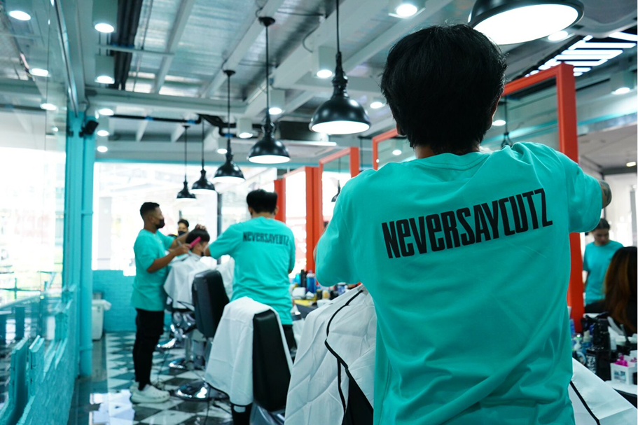

ที่อยู่: 2nd Floor 388 Rama I Rd, Khwaeng Pathum Wan, Pathum Wan, Bangkok 10330
โทร: 065-928-0568
Google Map: กดที่นี่
สยาม สแควร์วัน หรือที่หลายคนเรียกกันสั้นๆ และรู้จักว่า สยามวัน เป็นแหล่งรวบรวมความสนุก และที่กิน ที่เที่ยว ช้อปปิ้ง สุดฮิตอันดับต้นๆ ของวัยรุ่น สยาม สแควร์วัน เต็มไปด้วยความคึกคัก ทั้งหนุ่มสาววัยรุ่น และวัยทำงาน ที่มักจะมาแวะชิลล์กัน ซึ่งสยาม สเควร์วัน สามารถมาชิลล์ มาเช็คอินได้ตลอดทั้งวัน เรียกได้ว่าเป็นศูนย์รวมแฟชั่น และความทันสมัยของคนกรุงเทพฯ เลยก็ว่าได้
สำหรับใครที่อยากอัปเดตเทรนด์แฟชั่น ช้อปปิ้งผ่อนคลาย หาที่แฮงค์เอ้าท์ กินข้าวอร่อยๆ สังสรรค์กับแก๊งค์เพื่อนช่วงเย็นวันศุกร์ เดินเล่นเรื่อยเปื่อยแก้เบื่อแก้เซ็งจากการทำงาน ไม่ว่าคุณจะต้องการอะไร เรียกได้ว่ามาเที่ยวสยาม สแควร์วัน ก็จะตอบโจทย์คุณได้ทุกไลฟสไตล์
สยาม สแควร์วัน ด้วยการเดินทางที่สะดวกสบาย ติดกับรถไฟฟ้า BTS สถานีสยาม ทำให้สยามสแควร์วัน กลายเป็นพิกัดที่เด็กสยามทุกคนรู้จัก สยามสแควร์ วัน เต็มไปด้วยร้านค้า ร้านขายของมากมายหลากหลายแบรนด์ ทั้งเสื้อผ้า เครื่องสำอางค์ รวมไปถึงร้านอาหารชื้อดัง หรือแม้แต่ร้านอาหารบุฟเฟ่ต์นานาชนิดให้เลือกกินกันแบบไม่อั้นกันเลยทีเดียว
เปิดบริการทุกวัน 10.00 – 21.00 น.